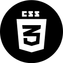
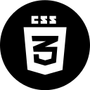
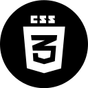

At this moment, I am still continuing my programming at the Coder Academy and we have already finished main skills like HTML5, CSS3, Javascript, React, Node.js, Rails etc . My full stack app will come soon by using these technologies at a professional level.
I was a finaical advisor for about 4 years and two-year part-time dog groomer. As a financial advisor, I like to keep learning the latest news and then analyse their effect on the investment. This soft skill ( Analyse - Find a solution - Then come to output) is very helpful for me when I am learning coding.
I really feel so passionate when coding even I can jump up to write code in the middle of the night when a solution comes out suddenly.
Please find out more details if you are interested in me......
My resumeMy skills
 



